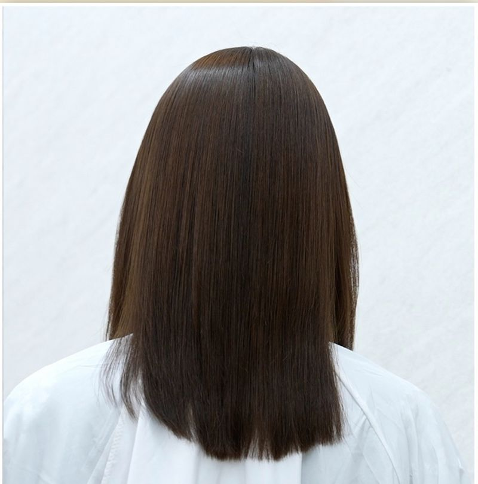

髪質改善ストレートの薬剤選定に迷う美容師へ
薬剤選定を、
感覚からチャートへ。
癖の強さ、髪の強度、ダメージ履歴を見極め、チャートとレシピに沿って薬剤を選定する。現役美容師の現場から生まれた、sins式 髪質改善ストレートシステム。
薬剤・マニュアル・教育を一体化し、サロン全体で再現しやすい技術へ。
- 薬剤 4種
- 癖毛チャート
- レシピ・マニュアル
- 教育セミナー
Problem
髪質改善ストレートを、
「経験と感覚」だけで選定していませんか？

- 担当者によって薬剤選定が変わってしまう
- 癖は伸ばしたいが、ダメージさせるのが怖い
- ブリーチ毛・既矯正毛・エイジング毛の判断が難しい
- 強い癖に、どこまで薬剤パワーを上げてよいか分からない
- スタッフに教えても、感覚的な説明になってしまう
- 薬剤を弱くしすぎて、癖の伸びが甘くなる
- 髪質改善ストレートを高単価メニューにしたいが、技術に自信がない
髪質改善ストレートが難しい理由は、美容師の技術だけではありません。
判断基準が、言葉と仕組みになっていないことも大きな原因です。
sins Method
迷いを減らすために、sins式は
髪質改善ストレートを「判断できる形」にしました。
癖の見極めから、流すタイミングまで。判断を4つの工程に分け、サロンのスタッフが同じ基準で考えやすいようにしています。
癖毛チャートで
癖の強さを確認SINS CURL PATTERN CHART でウェーブ幅を A・B・C に分類
髪の強度と
ダメージ履歴を確認太さ・強度、カラー・ブリーチ・既矯正の履歴を加味
レシピ表から
薬剤を選定T7・TC6・4.5・0.5 と処理剤の組み合わせを決定
還元チェックで
流すタイミングを判断D Test Curl を基準に、還元状態を確認
Sins Curl Pattern Chart癖毛チャート

実際の癖と並べて、チャートで分類する
※ 図はウェーブ幅の目安です。実際の判定はセミナー動画で解説します。
「どの薬剤を使うか」だけでなく、
「いつ流すか」まで基準を統一する。
SINS CURL PATTERN CHART で、癖のウェーブ幅を A・B・C に分類。髪の太さや強度、カラー・ブリーチ・既矯正などの履歴を加味して、使用する薬剤とレシピを選びます。
さらに、D Test Curl を基準に還元状態を確認。「どの薬剤を使うか」だけでなく、「いつ流すか」まで判断基準を統一します。
文字だけの説明ではなく、チャートという共通の物差しがあるから、スタッフ間でも同じ言葉で話せるようになります。
無料・登録不要・LP内で視聴できます
Selection Flow
「伸ばす部分」と「守る部分」を、
同じ薬剤で考えない。
sins式では、髪全体を一つの状態として判断しません。新生部、既矯正部、ダメージ部分、顔周り、毛先など、部位ごとの目的を整理します。
癖を伸ばす部分には必要な還元力を使い、傷みやすい部分は 0.5 や処理剤を使用して薬剤パワーを調整します。
- 1癖毛チャートを当てるウェーブ幅を A・B・C で分類
- 2後頭部など、癖の強い部分を確認する
- 3髪の太さ・強度を確認する
- 4カラー・ブリーチ・髪質改善ストレートの履歴を確認する
- 5基準となる薬剤を選ぶレシピ表に沿って、基準薬剤（T7 / TC6）を決める
- 6細毛・損傷部分は塗り分ける0.5 や処理剤でパワーを調整
- 7クルクルチェックで還元状態を確認するD Test Curl を基準に、流すタイミングを判断


Before / After
マニュアル通りに考えると、
難しい髪も整理して判断できる。
スライダーを動かして、施術前後を見比べてください。各施術例の判断は、セミナー動画の中で解説しています。
※ 写真は実際の施術例です。仕上がりには個人差があり、髪の状態や履歴によって異なります。
無料・登録不要（このページ内で視聴できます）
Seminar
文章だけでは分からない薬剤反応を、
実際の施術で確認してください。
なぜこの薬剤を選んだのか。
なぜこの部分だけ薬剤を変えたのか。
どの状態になったら流すのか。
sins のセミナーでは、レシピだけでなく、判断の理由までお伝えします。
動画はこのページ内で視聴できます。外部登録やメール入力はありません。
Online Seminar
セミナーの翌日から、
サロンワークで使える内容を。
薬剤の説明ではなく、判断の仕方を学ぶセミナー動画です。2倍速でもご覧いただけます。登録・メール入力は不要で、スマートフォンでもご覧いただけます。
- 01癖毛チャート A・B・C の見分け方
- 02髪の太さ・強度・履歴の確認方法
- 03T7・TC6・4.5・0.5 の使い分け
- 04ダメージ部分への塗り分けと減力
- 05クルクルチェックによる還元判断
- 06髪質別のドライ・ツインブラシ・アイロン操作
- 07伸びが甘かった場合の原因分析
- 08お客様へのカウンセリングと仕上がり説明



無料オンラインセミナー動画｜sins式 髪質改善ストレート
無料・登録不要
セミナー動画は準備中です
公開までしばらくお待ちください動画が再生できない場合は、こちらから直接ご覧ください。
サンプルセットのご案内は、動画の視聴完了後に表示されます。
2倍速でもご覧いただけます。視聴状況はお使いのブラウザに保存され、同じ端末・同じブラウザなら次回も引き継がれます。
ご視聴ありがとうございます
sins式を、サロンで実際にお試しください。
癖毛チャートと合わせて使うことで、動画で解説している「判断の仕方」をそのままサロンで確かめられます。
Sample Set
13,200円（税込）サンプルセット
最新の価格・セット内容は購入ページでご確認ください。
✓ ご視聴ありがとうございました。サンプルセットのご案内を表示しました。
Line Up
4つの薬剤を覚えるのではなく、
それぞれの役割を理解する。
色で役割が分かる4つの薬剤。チャートと履歴の判断に沿って、基準薬剤とブレーキ剤を組み合わせます。

-
T7
BASE / STRONG
強い癖や、強度のある髪に対応する基準薬剤
-
TC6
BASE / ACID
弱酸性領域で、幅広い髪質に対応
-
4.5
GENTLE
細毛・エイジング毛・ダメージ部分に対応
-
0.5
BRAKE
傷みやすい部分を守るブレーキ剤
※ 薬剤は美容師向けのプロフェッショナル用製品です。仕上がりを保証するものではなく、髪の状態や履歴によって結果は異なります。
「伸ばす部分」には T7・TC6 で必要な還元力を。「守る部分」には 4.5・0.5 と処理剤でパワーを調整。
組み合わせの考え方は、セミナー動画で解説しています。
無料・登録不要（このページ内で視聴できます）
What We Aim For
技術が変わるだけではなく、
サロン内の「共通言語」が生まれる。
sins式が目指しているのは、一人の美容師の上達ではなく、サロン全体で同じ判断ができる状態です。
導入後に目指す変化
- 1薬剤選定の基準がスタッフ間で揃う
- 2新人への技術教育がしやすくなる
- 3難しい履歴でも、考え方を整理できる
- 4髪質改善ストレートへの苦手意識が減る
- 5高単価メニューとして提案しやすくなる


これまでに開催してきた sins セミナーの様子
Voices
導入美容師・サロンの声

Instructor
現役美容師の現場から生まれた、
美容師のための薬剤と教育。
sins cosmetics ／ 現役美容師（sinsia）
サロン「sinsia（シンシア）」でサロンワークを続けながら、sins式 髪質改善ストレートの教育・セミナー登壇を行っています。
セミナーでは、レシピだけでなく、「なぜこの薬剤を選んだのか」「どの状態になったら流すのか」という判断の理由までお伝えしています。
薬剤を販売するだけではなく、
技術が育つ仕組みまで届ける。
切りたくなくなる髪を、世界へ。
Next Step
ご導入までの流れ
まずは動画で仕組みを理解し、サンプルセットで実際の薬剤反応を確認します。この順番なら、判断しやすさをサロンで体感してから導入できます。
-
無料・登録不要
動画で仕組みを理解する
癖毛チャート、履歴の確認、薬剤の使い分け、還元チェック。sins式の判断の流れを、このページ内の動画で学びます。
動画を見る -
13,200円（税込）
サンプルセットで試す
動画を視聴した方に、サンプルセットの購入ページをご案内します。サロンで実際の薬剤反応を確認してください。
動画視聴後にご案内 サンプルセット購入ページへ -
サロン導入
チャートとマニュアルで再現する
薬剤・癖毛チャート・マニュアル・教育を一体で使うことで、スタッフ間でも同じ基準で判断できるようになります。
導入について相談する
FAQ
よくある質問
Qsins の薬剤を使ったことがなくても、動画は見られますか？
はい、ご覧いただけます。動画は sins式の考え方（癖毛チャート、薬剤の役割、還元チェック）を最初から説明する内容です。薬剤をお持ちでない方や、今は別の薬剤をお使いの方も、まず考え方を確認する目的でご視聴ください。登録やメール入力も不要です。
Q髪質改善ストレートの経験が浅くても、内容についていけますか？
はい。sins式は「感覚に頼らず、チャートと手順で判断しやすくする」ことを目的にしているため、判断に迷うことが多い方ほど、基準を整理する材料としてお役立ていただけます。専門用語が出てくる箇所は、一時停止しながらご覧ください。
Q動画では、モデル施術の様子も見られますか？
動画は、癖毛チャートの当て方、薬剤の塗り分け、還元チェック、アイロン操作、仕上がり説明までの流れを解説する構成です。詳しい内容は、上の「セミナーで学べる内容」をご覧ください。
Q動画を見たら、サンプルセットの購入は必須ですか？
必須ではありません。動画は無料でご覧いただけ、視聴後に表示されるのは購入ページへのご案内だけです。sins式を実際のサロンワークで試してみたい方に向けて、サンプルセット（13,200円（税込））をご用意しています。最新の価格・セット内容・お支払い方法は購入ページでご確認ください。
Q集合セミナーはどこで開催していますか？
集合セミナーは、開催地や日程が回ごとに異なります。現在の開催予定は、購入ページ内のお問い合わせからお尋ねください。まずはこのページの動画で、sins式の考え方をご確認いただくことをおすすめします。
Qスマートフォンでも視聴できますか？
はい、スマートフォン・タブレット・パソコンのいずれでもご覧いただけます。動画のデータ量が大きいため、Wi-Fi 環境でのご視聴をおすすめします。「2倍速で見る」ボタンを使うと短時間でご覧いただけます。視聴状況はお使いの端末のブラウザに保存されるため、同じ端末・同じブラウザであれば、後日開いた際も購入ページのご案内が表示されます。
Q動画の内容について質問はできますか？
購入ページ内のお問い合わせからお寄せください。個別の髪の状態に関するご相談は、髪の写真や履歴の情報が必要になるため、回答までにお時間をいただく場合があります。
Qキャンセルや日程変更の手続きは必要ですか？
このページの動画は録画のオンラインセミナーですので、キャンセルや日程変更の手続きは不要で、お好きなタイミングで何度でもご覧いただけます。サンプルセットの返品・キャンセルの条件は、購入ページに記載の規約をご確認ください。
Q美容師免許のないスタッフも視聴できますか？
動画の視聴自体に資格の制限はありません。アシスタントやレセプションの方が、サロン内の共通言語として考え方を理解したり、お客様への仕上がり説明に役立てたりする目的でご覧いただけます。ただし、薬剤を用いた施術は、法令に基づき美容師免許をお持ちの方が行ってください。

Last Message
髪質改善ストレートを、
一人の上手な美容師だけの
技術にしない。
癖毛チャート、薬剤、レシピ、還元チェック。感覚で行われてきた判断を、一つずつ共有できる形にする。
まずはセミナー動画で、sins式の考え方と仕上がりをご確認ください。
動画は無料・登録不要でご覧いただけます。